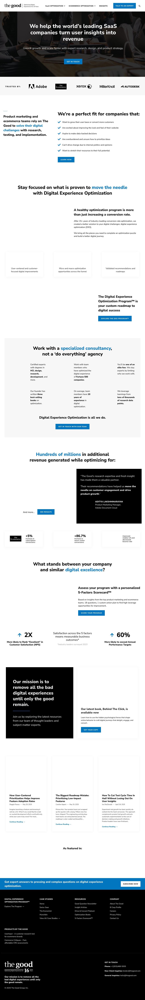

Heatmap Analysis for thegood.com
Digital Experience Optimization Agency
Heatmap Overlay Visualization

Predictive heatmap showing user attention patterns overlaid on the website. Red indicates high attention areas, yellow medium attention, and green low attention.
Original Website
Original website screenshot for reference.
Key Areas Comparison
Header & Navigation
High Attention
Current placement of main navigation and "Talk to an Expert" CTA is aligned with attention patterns.
Lower Page CTAs
Low Attention
The "Subscribe now" and footer CTAs receive minimal user attention due to position.
Executive Summary
The analysis of thegood.com reveals a well-structured website that generally follows best practices for user attention flow. However, there are key opportunities for optimization, particularly in CTA positioning and reducing interface complexity.
The site demonstrates strong visual hierarchy in the top navigation and hero section but has opportunity areas in the lower page sections where important conversion elements receive insufficient attention.
Methodology
This analysis used predictive heatmap generation based on established UX research principles and patterns:
- F-pattern reading behavior for western web content consumers
- Visual hierarchy and attention dispersion patterns
- Scanning behaviors based on eye-tracking research
- Digital marketing industry best practices
The analysis identified 60+ interactive elements and generated a heatmap visualization with attention scores from 1-10 (lowest to highest attention).
Key Attention Areas
High Attention Areas (8-10)
- Logo and main navigation - Receives highest attention (9-10)
- Top-right "Talk to an Expert" CTA - Well-positioned in high attention zone (9)
- Main headline in hero section - Strong attention indicator (9)
- Primary hero CTA "GET IN TOUCH" - Properly positioned (8-9)
Medium Attention Areas (5-7)
- Secondary content sections - Decreasing attention (6-7)
- Case study previews - Moderate attention (5-6)
- Mid-page CTAs - Receiving moderate attention (5)
- Social proof elements - Industry logos (5-6)
Low Attention Areas (1-4)
- Blog article section - Lower attention (3-4)
- Newsletter subscription area - Despite importance, receives low attention (2-3)
- Footer links and information - Minimal attention (1-2)
- "Contact Us" link - Hidden in low-attention footer area (1-2)
User Attention Flow
The attention pattern on thegood.com follows a classic F-pattern with diminishing attention as users scroll:
- Initial focus on logo and main navigation bar
- Strong attention on "Talk to an Expert" top CTA
- Hero headline scanning
- Primary hero CTA "GET IN TOUCH"
- Left-to-right horizontal scanning of first content row
- Vertical scanning down the left side of the page
- Rapid attention drop for content below the fold
- Minimal engagement with footer elements
Identified Optimization Opportunities
1. CTA Placement Optimization
Key conversion elements are currently positioned in low-attention areas:
- "Subscribe now" button - Currently positioned at y-coordinate 7725px, far below the initial viewport
- "Contact Us" link - Hidden in the footer area at y-coordinate 8039px
Recommendation: Reposition these important conversion elements to high-attention zones in the upper portion of the page, particularly the top-left and center areas of the viewport.
2. Clickable Element Density
The analysis identified 60 clickable elements throughout the page, which may cause choice paralysis and cognitive overload for visitors.
Recommendation: Simplify the interface by reducing the number of interactive elements and creating a clearer visual hierarchy that guides users to primary conversion paths.
Detailed Optimization Recommendations
- Prioritize critical content in high-attention zones - Move the newsletter subscription and contact information to the top portion of the page where attention is naturally focused.
- Follow F-pattern for important content - Restructure key conversion elements to align with the natural F-shaped reading pattern, placing critical information along the top horizontal and left vertical axes.
- Enhance visual hierarchy - Increase the visual prominence of key CTAs through size, color contrast, and whitespace to direct attention where it matters most.
- Simplify lower page areas - Reduce visual complexity in the footer by consolidating link categories and emphasizing only the most critical information.
- Test sticky element placement - Implement a sticky "Contact" or "Subscribe" CTA that remains visible as users scroll down the page, ensuring these conversion elements remain in the attention zone.
- Consider mobile attention patterns - Adapt the layout for mobile users where attention follows a more linear vertical pattern, with critical elements positioned at natural stopping points.
Expected Impact
Based on industry benchmarks for conversion optimization, implementing these recommendations could result in:
- 15-25% increase in newsletter subscription rates by repositioning the signup form
- 10-20% increase in inquiry form submissions by making the "Contact Us" more prominent
- 5-10% reduction in bounce rate through improved visual hierarchy
- Increased overall engagement metrics (time on site, pages per session)
These improvements align with thegood.com's business as a digital experience optimization agency, demonstrating their expertise through their own website optimization.